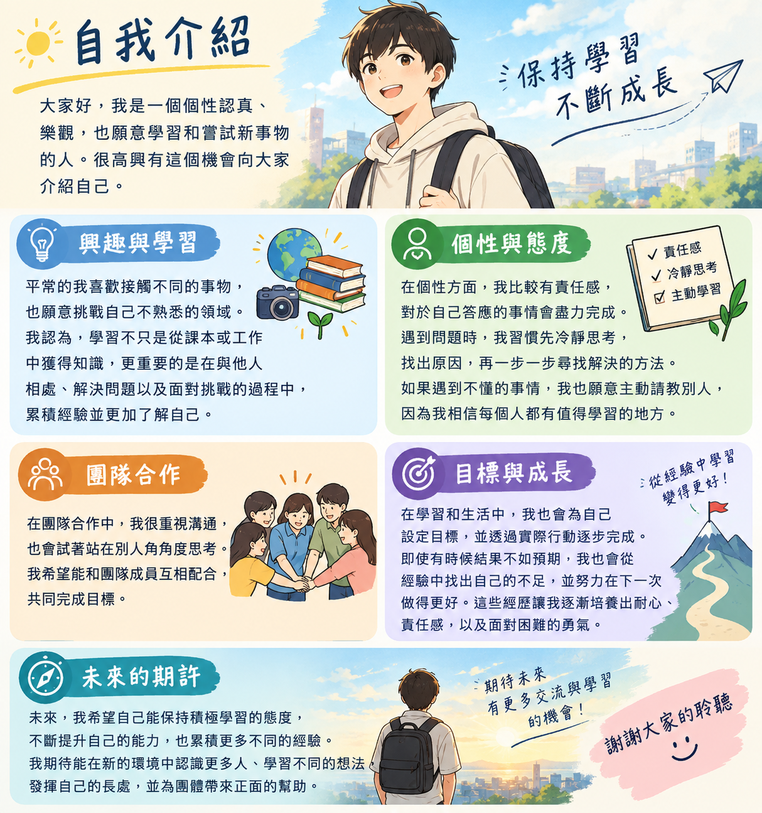

大家好，我是一個個性認真、樂觀且願意學習的人。很高興有這個機會向大家介紹自己。平時的我喜歡接觸不同的新事物，也願意嘗試自己不熟悉的領域。我認為，學習不只是從課本或工作中獲得知識，更重要的是在與他人相處、解決問題以及面對挑戰的過程中，不斷累積經驗並了解自己。
在個性方面，我比較有責任感，對於自己答應的事情會盡力完成。遇到問題時，我習慣先冷靜思考，找出原因，再一步一步尋找解決的方法。如果遇到自己不懂的事情，我也不會害怕請教別人，因為我相信每個人都有值得學習的地方。與人合作時，我重視溝通與團隊合作，也會試著站在別人的角度思考，讓彼此能夠順利完成共同的目標。
在學習與生活中，我也會為自己設定目標，並透過實際行動逐步完成。雖然我並不是每一次都能做到最好，但我認為失敗並不可怕，重要的是能從經驗中找到不足，並在下一次做得更好。這樣的過程讓我逐漸培養出耐心、責任感以及面對困難的勇氣。
未來，我希望自己能持續保持積極學習的態度，不斷提升自己的能力，同時累積更多不同的經驗。我也期待能夠在新的環境中認識更多人，學習不同的想法，發揮自己的長處，並為團體帶來正面的幫助。以上就是我的自我介紹，謝謝大家耐心聆聽，也期待未來能有更多交流與學習的機會。
